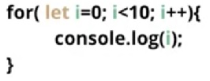
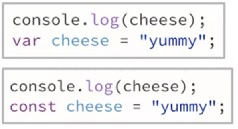

const and letES6 (ES2015) introduced two new ways to declare variables in JavaScript. They both help minimize the chances that a variable holds an unexpected value
const cheese = "yummy";
The variable cheese can not hold any other value, other than "yummy" for the life of the program
let can change values, but it has block level scope.
const ExampleTry the example above and you will see that the last line causes an error
let ExampleTry the example above, you will see the value of the variable i in this loop changes as the loop runs, but there is no acces to i outside the loop.
By default, JavaScript hoists variables. This means you can use them before you specifically declare them.This can lead to unexpected results.
You should declare your variables first.
Const and Let are not hoisted. Try the examples below to see the difference.
